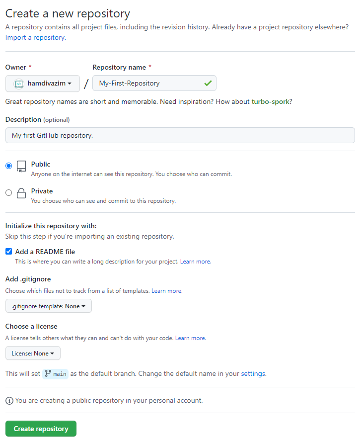

Hey there awesome devs! In this tutorial, we'll be looking at how you setup git with your computer. Git is an important skill you need to know to be able to handle code properly, get a programming job etc. First, let's look at setting up git on your computer :)
We'll first need to install the Git Bash Terminal. Once you open the link, you should find a button to download Git Bash for your operating system:
Click the button to download and follow the instructions to install. Once you've finished, you should succesfully have Git Bash installed! Next, we'll be setting up git with your account. You'll need a GitHub Account for this :)
$ git config --global user.name "YOUR-USERNAME-HERE"
$ git config --global user.email "YOUR-EMAIL-HERE"
You can use the git config command to configure git with your account. The --global tag means that this will apply to every local (stored on your computer) repository that you make. If you don't want that, you can simply remove it. Once you're ready, we'll write some code :)
Create a new folder called My-First-Git-Repo/ and navigate to it in Git Bash. We're going to initialise an empty repository here:
$ git init
This creates the hidden folder .git. This is our repository. Git stores your code in these repositories each time you commit to them. The way git works is that you make modifications to your code (such as adding code, removing code, or adding/deleting files) and stage the changes. Once your changes are tested are are staged, they are ready to commit. Git creates a snapshot of your code and saves it in the repository, ready to revert back to if you happen to mess up.
$ git add .
# The add command stages the changes and the dot signals that it should stage every change.
$ git commit -m "A short description of the changes you've made."
# The commit command commits the staged changes and saves them to the repository with a short message.
You can write a short hello world program and save it to the folder. Then, practise the git add and git commit commands. Once you've got some commit history in your repository, get ready to push it up to GitHub :)
First we'll need to create a remote repository. This is basically a repository stored on GitHub.com. Go to GitHub and click to create a new repository in the top menu.
You should now see a screen like this. Fill in the details similarly to the above, then hit Create Repository to make your first remote repo :)
If you see a code menu in the screen, click it and copy the GitHub link that comes up. If you see the screen titled Quick setup - if you've done this kind of thing before, click the copy button next to the link. Once you've got your remote repository link, switch back to Git Bash, ready to use it to connect your local repository to your remote repository :)
$ git remote add origin [THE-URL-YOU-JUST-COPIED]
# Sets the remote repository
$ git remote -v
# Verifies the new URL
$ git push origin main
# Pushes the code to the 'main' branch of the remote repository you specified
First, use the git remote command to specify and verify the remote repository you want to push to. Then, use the git push command to push your changes and commits to your remote repository. Once you get the hang of Git and GitHub, it becomes a really useful tool you'll use in your day-to-day life as a programmer.
Git is awesome and has great tools, but we have only covered the basics of how git works, how to commit and push your changes up to GitHub. If you want, you could ask me to make a part 2 on this topic and I'll cover git checkout, pull requests, markdown etc. I hope you learnt something new, and until next time, happy coding :)